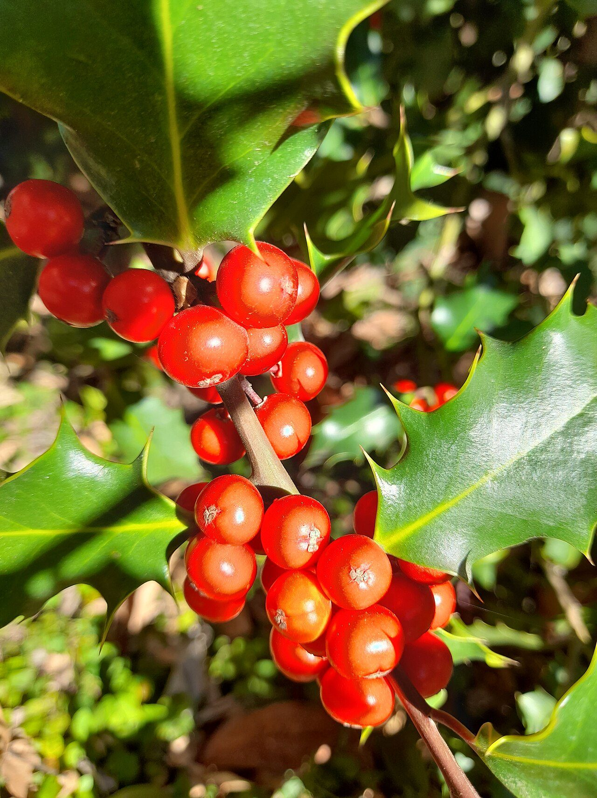
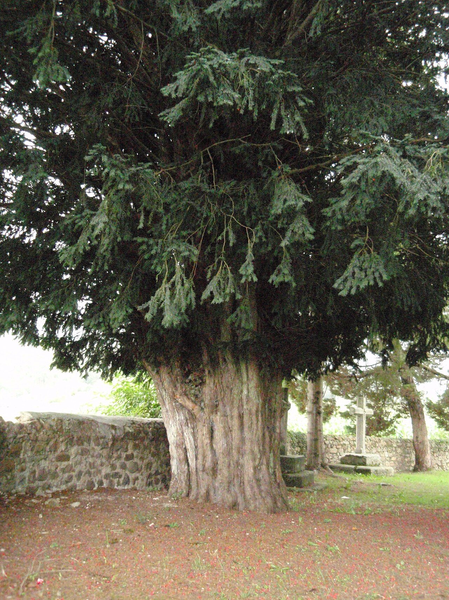

Flora característica
Criterios: PN 1.1, PN 3.3
🤔 Pienso5 min
Qué hago aquí: Piensa un momento y contesta con lo que ya sabes. No pasa nada si no lo sabes: es para empezar.
¿Sabes qué es el acebo? ¿Por qué crees que está prohibido arrancarlo en Navidad?
📖 Leo y aprendo15 min
Qué hago aquí: Lee despacio, mira los dibujos y los ejemplos, y quédate con la idea clave del final.
Además de los árboles grandes, Cantabria tiene una flora muy variada. Cada ambiente tiene sus plantas:
acebo, tejo, avellano, helechos, musgos
hierbas, tréboles, margaritas
brezo, árgoma, arándano, genciana
barrón, lirio de mar, plantas de la marisma

Foto: Fernando de Gorocica · CC BY-SA 4.0 · Ilex Aquifolium - Acebo - Frutos.jpg

Foto: Dolmanrg · CC BY-SA 4.0 · Tejo Nº22 Inventario Arboles Singulares de Cantabria.JPG
En las dunas viven plantas que aguantan la sal, el viento y la arena: el barrón, con raíces muy largas que sujetan la arena, o el lirio de mar, de flores blancas en verano. En las marismas crecen plantas que soportan estar cubiertas por el agua salada con la marea.
✏️ Hago25 min
Qué hago aquí: Haz las actividades en orden. Empieza siempre por las básicas.
Explica por qué el acebo y el tejo están protegidos. Para cada uno, escribe un valor ecológico y un valor cultural o histórico.
Explica cómo están adaptadas las plantas de las dunas (barrón, lirio de mar) a la sal, el viento y la arena. ¿Por qué son importantes para que la duna no desaparezca?
El prado es un paisaje creado por el ser humano y el ganado. ¿Qué pasaría con un prado si se dejara de segar y de pastar durante 30 años? Explica las etapas.
Explica qué es una especie invasora y por qué el plumero de la Pampa es un problema. Usa las palabras competir, autóctona y sin control.
Diseña una campaña para eliminar el plumero de un tramo de costa: qué harías, en qué época, quién participaría y cómo evitarías que volviera. Explica por qué no basta con cortarlo.
Los tejos aparecen a menudo junto a iglesias y ermitas. Busca una explicación histórica y relaciónala con el patrimonio cultural de la unidad 6.
Elige un ambiente (bosque, montaña, costa o prado) y haz una ficha de identificación de tres plantas: dibujo, rasgo para reconocerla y dónde vive.
✏️ Puedes responder escribiendo, con un dibujo o un esquema, o contándolo en voz alta.
🚀 Amplío (si quieres saber más)
Qué hago aquí: ¿Has terminado? Lee la curiosidad o elige el reto. Es voluntario.
Investiga el tejo de Lebeña: edad estimada, qué le pasó en 2007 y qué tradición está unida a él. Compara su edad con la de la iglesia de Santa María de Lebeña. ¿Puede un árbol ser monumento? Argumenta tu respuesta.
✅ Compruebo5 min
Qué hago aquí: Contesta sin mirar la ficha y marca cómo lo llevas.